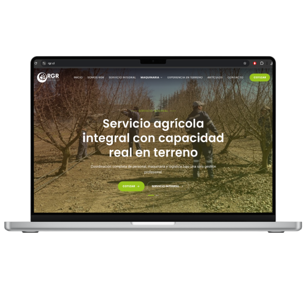
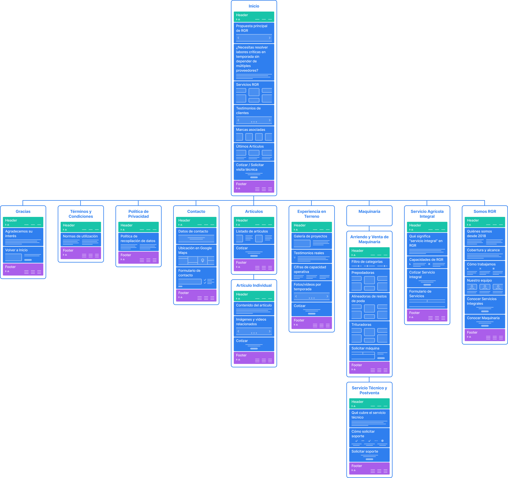

Caso de estudio · UX/UI · AI-Assisted Design
RGR
De una landing limitada a un sitio web escalable con catálogo

RGR necesitaba dejar atrás una landing limitada y evolucionar hacia un sitio web capaz de presentar un catálogo creciente, organizar mejor su oferta y acompañar el crecimiento del negocio.
La landing existente comenzaba a quedar pequeña frente a la cantidad de productos e información que RGR necesitaba comunicar. La pregunta principal no era cuántas páginas agregar, sino: "¿Qué tipo de sitio necesitaba realmente el negocio?" La respuesta fue evolucionar hacia un sitio corporativo con catálogo, manteniendo el contacto comercial como conversión principal y evitando incorporar carrito y checkout innecesarios.
Fragmentación
Los documentos estaban dispersos en múltiples silos de información, dificultando la recuperación rápida y auditoría.
Ineficiencia Temporal
El equipo invertía un promedio de 2.5 horas diarias únicamente en la búsqueda y clasificación manual de archivos.
Arquitectura de información, UX/UI, organización del catálogo, navegación, jerarquía, responsive design, lineamientos gráficos digitales, prototipado asistido por IA y revisión de factibilidad. Actué como puente entre las necesidades del negocio (stakeholders de RGR) y las capacidades técnicas del equipo de desarrollo.
El branding fue desarrollado por un proveedor externo y aprobado por el cliente previamente. Mi responsabilidad consistió en trasladar esa identidad al entorno digital y definir sus lineamientos de aplicación web.
El principal cambio no fue visual. Fue estructural.
Descubrir RGR → Explorar catálogo → Profundizar en producto → Contactar.

La integración de herramientas de IA generativa fue crucial para mantener la agilidad del proyecto dadas las limitaciones de tiempo. Utilizamos Lovable para acelerar la generación del prototipo navegable a partir de la arquitectura y directrices ya definidas.
La IA aceleró la producción. Las decisiones continuaron siendo de diseño.
Resolvió
- ✓ Generación inicial y componentes.
- ✓ Rapidez de prototipado.
- ✓ Interfaz navegable.
Requería criterio UX
- ✓ Arquitectura y prioridades.
- ✓ Navegación, jerarquía y escalabilidad.
- ✓ Modelo de catálogo y factibilidad.
Tiempo
Plazo reducido para pasar de landing a sitio con catálogo.
Marca
Branding desarrollado por un tercero y previamente aprobado.
Tecnología
Código generado con IA sujeto posteriormente a revisión técnica.
Las restricciones no se ocultaron: se utilizaron para priorizar dónde debía concentrarse el esfuerzo UX.
RGR pasó de una lógica de landing a una estructura web preparada para organizar una oferta más amplia mediante un catálogo escalable. La solución permitió mejorar la separación de contenidos y establecer un recorrido más claro: exploración → producto → contacto.
No existía instrumentación analítica suficiente para atribuir cambios posteriores en conversión, por lo que el resultado se presenta desde la arquitectura, escalabilidad, eficiencia y factibilidad del proceso — no se inventan métricas.
Lo que este proyecto cambió en mi proceso
Vibe Coding puede reducir el tiempo de producción, pero funciona mejor cuando el problema, la arquitectura y las prioridades ya están definidos.
- 01 — Usar IA después de definir el problema.
- 02 — Diseñar componentes pensando también en desarrollo.
- 03 — Utilizar la velocidad ganada para iterar, no solo para producir más rápido.
¿Estamos construyendo la solución correcta para el usuario y para el negocio?